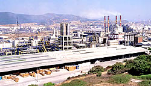
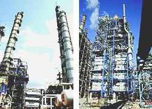

About Us
The idea of establishing a petrochemical industry in Turkey was adopted in 1962, which was the beginning of the I. Five Year Development Plan period. Petkim Petrokimya Holding A.Ş. was established on April 3, 1965 under the leadership of TPAO, following the studies and evaluations performed.
The new company initially established the other plants after Yarımca Petrochemical Complex in 1970. It was decided to establish the second complex of Petkim in Aliağa through the III. Five Year Development Plan period. Aliağa Complex, has advanced technology and optimum capacity, came into operation in 1985.
 Demand of petrochemical products especially thermoplastics rising at least two times of world average. Ratio of the plastic demand rising speed to national income is much more then world average. Petkim maintain the leasehold expanding investments having started in 1998. It was finished the improvement study, valued at about 450 million dollars, for increasing Paraxylene product purity, capacity utilization in Aromatics Plant and investments of increasing production of 120.000 ton/year in Ethylene Plant, 120.000 ton/year in Low Density Polyethylene Plant, 64.000 ton/year in Polypropylene Plant in 2005.
Within the scope of these investments, by spending 100 million dollars in Vapor Generation Electricity Generation Units, Gas turbine of 57 Megawatt and related waste heat acquisition system put into use so that electricity production installed capacity was increased to 226 Megawatt. It was started to use of natural gaze instead of fuel-oil because of its economic and environment friendly. PETKIM reached the highest production and sale in its history as a consequence new investments finished in 2005.